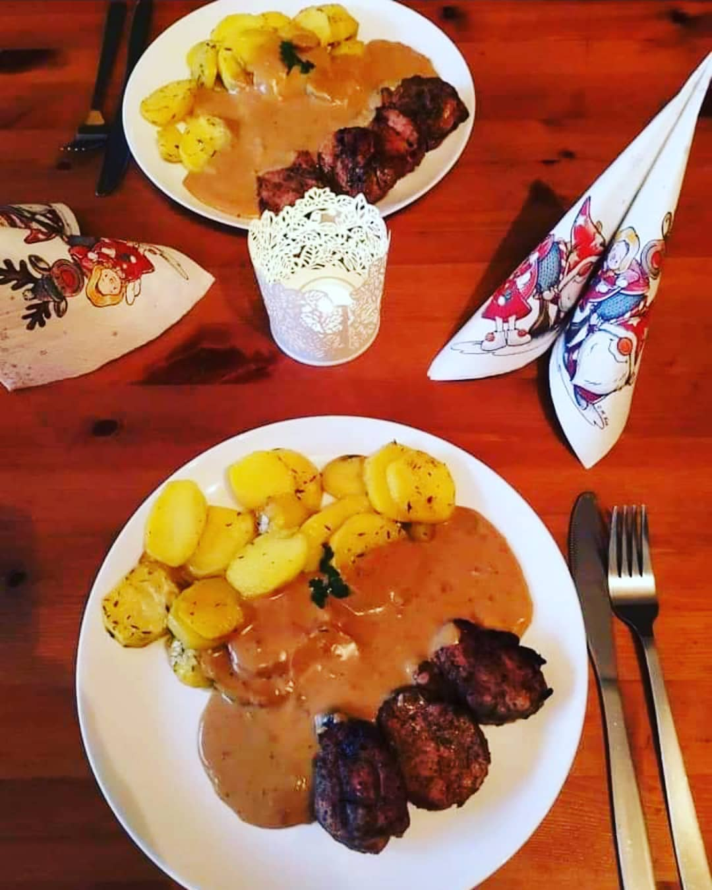

Cibuľová omáčka podľa @luc_v_kuchyni — Normy Jedál
Panenka
❤️😍☀️
Penka s cibulovou omáčkou a pečené brambory ❤️.
#varimedoma #varimeslaskou #vaříme #varimesrdcem #panenka #mnamka #patek #lucvkuchyni #obed #dobryobed #jidlo #dobrejidlo #jidlojelaska #jidlomebavi #cibulovaomacka #obedprodva #obedvedvou #milujemedobrejidlo #milujemejidlo #milujemevareni #pecenebrambory #konicek